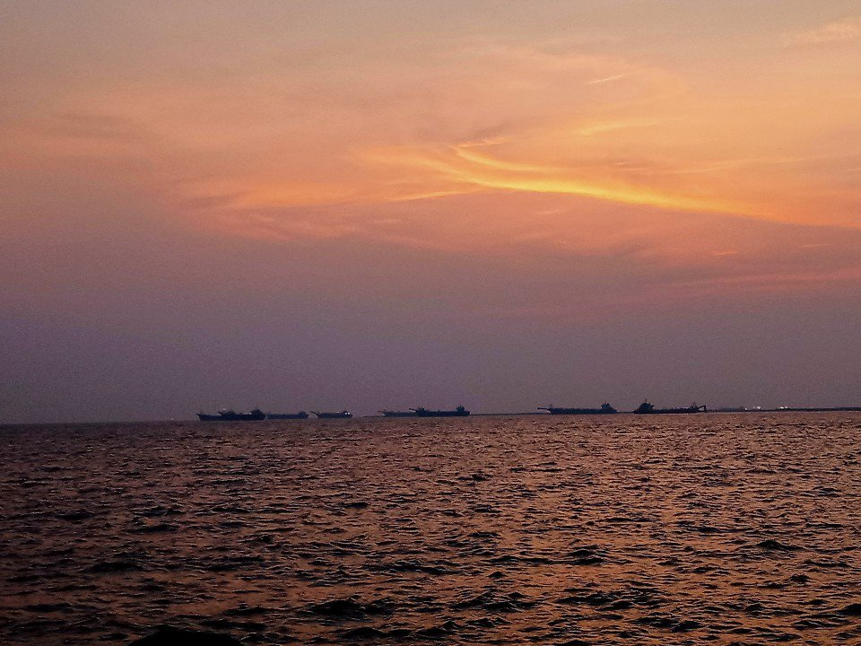
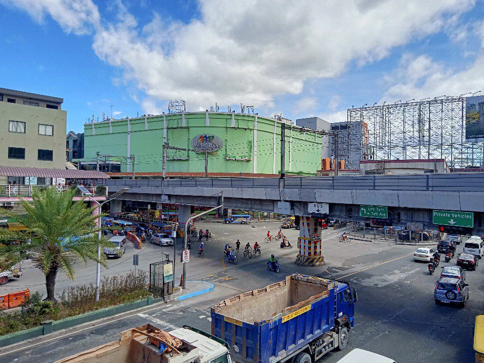
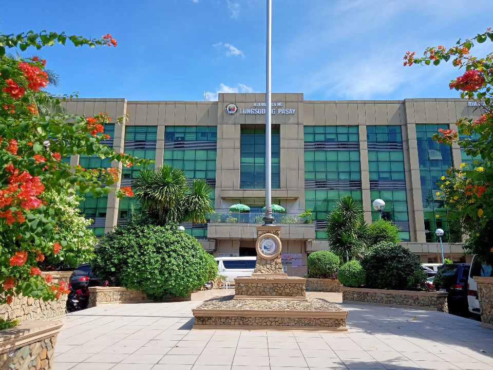
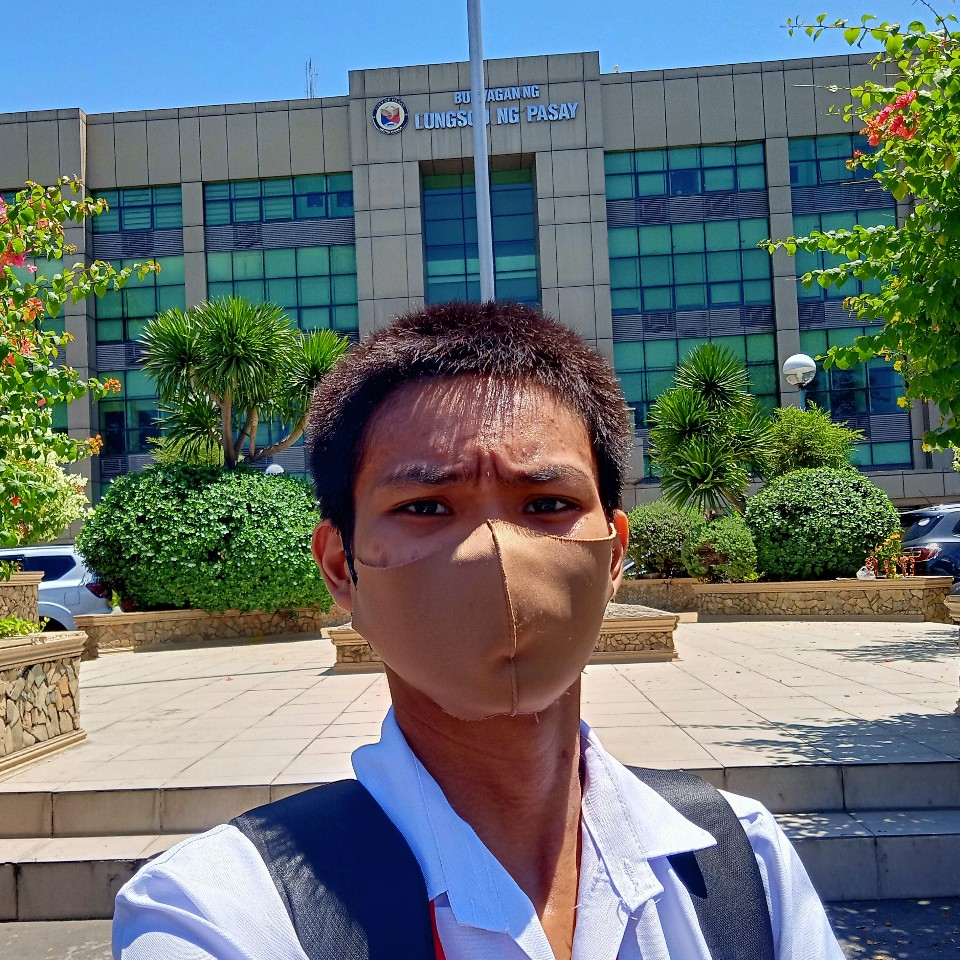

Welcome to our website!
Thank you so much for making this personal project go viral like crazy! If you liked this project and want it to be accessible in the future as you want LRT-1 trains also the trainspotting and rides, Pasay City West High School, and web-based apps, please consider supporting below:
Facebook
YouTube
This simple web to explore something new at LRT-1 to enjoy for trainspotting, rides and, explore articles in this site.
YouTube
This simple web to explore something new at LRT-1 to enjoy for trainspotting, rides and, explore articles in this site.
LRT-1

LRT-1 is owned by Light Rail Transit Authority and the operator and maintenance by Light Rail Manila Corporation. LRT-1 started operations in December 1, 1984 and make this a first LRT system in Southeast Asia. With the length of 19.65 kilometers and 20 stations, LRT-1 is a great service ever because the air conditioning is very cool, the speed is fast, and enjoyable view outside. So do you want ride LRT-1?
In this section, you want to see about LRT-1 and also the trainspotting and train rides by Justin. This includes updates for up-to-date information about LRT-1.
Please click the link below for more pages about LRT-1:
Click here to read more about LRT-1
In this section, you want to see about LRT-1 and also the trainspotting and train rides by Justin. This includes updates for up-to-date information about LRT-1.
Please click the link below for more pages about LRT-1:
- LRT-1 updates
- LRT-1 fare guide
- LRT-1 free ride
- LRT-1 trainspotting
- LRT-1 ride
- Songs
- System map
- Justin sent a letter to LRT-1 management
- LRT Elections and Officers
Click here to read more about LRT-1
- LRT-1 navigation page - shortcut for information of rolling stocks, stations, and operators
LRT-1 Apps
- My LRT-1 Travel Level - used to visualize how well-travelled you are in LRT-1.
- LRT-1 Bingo - used to visualize what you're done in LRT-1.
Pasay City West High School

Pasay City West High School is a large public school in Pasay, Philippines, established in 1949. It is located at Pasadeña Street, FB Harrison, Pasay City, Metro Manila. This school occupied more than 7,500 students. The current principal is Mr. Agapito Teodoro N. Manaog.
This section was I included here because to make visitors better how beautiful the largest public school in Pasay City it is and what their contents and features around the school.
Click here to read more about Pasay City West High School
Please click the link below for more pages about Pasay City West High School:
This section was I included here because to make visitors better how beautiful the largest public school in Pasay City it is and what their contents and features around the school.
Click here to read more about Pasay City West High School
Please click the link below for more pages about Pasay City West High School:
Photographies
 |
|
|  |  |
|  |  |
Some of his photos captured somewhere
Justin LRT took more than 1000 photos per year everywhere. This is one of main hobbies other than of trainspotting and train rides to share the photos in the public to make people see what the place look like now.
Would you like to see his photographies? Click here.
Would you like to see his photographies? Click here.
Web Apps
Web apps by Justin LRT are the apps that never existed before. This can only be used in the site and can't be downloadable as mobile application.Click here to view our Web Apps.
About me
 Hello there! My name is Justin and I am a student of Pasay City West High School, a photographer, song composer, and rail enthusiast. I'm always ride LRT-1 because I'm enjoying ride trains with cool air conditioning, fast speeds and safe.This is my first time dabbling with coding, and I used ChatGPT heavily to help me with this project. If you have any comments or if you want to contribute to this project, please do reach out!
Click here for more information about me.
If you liked this project and want it to be accessible in the future, please consider supporting me. Thank you!